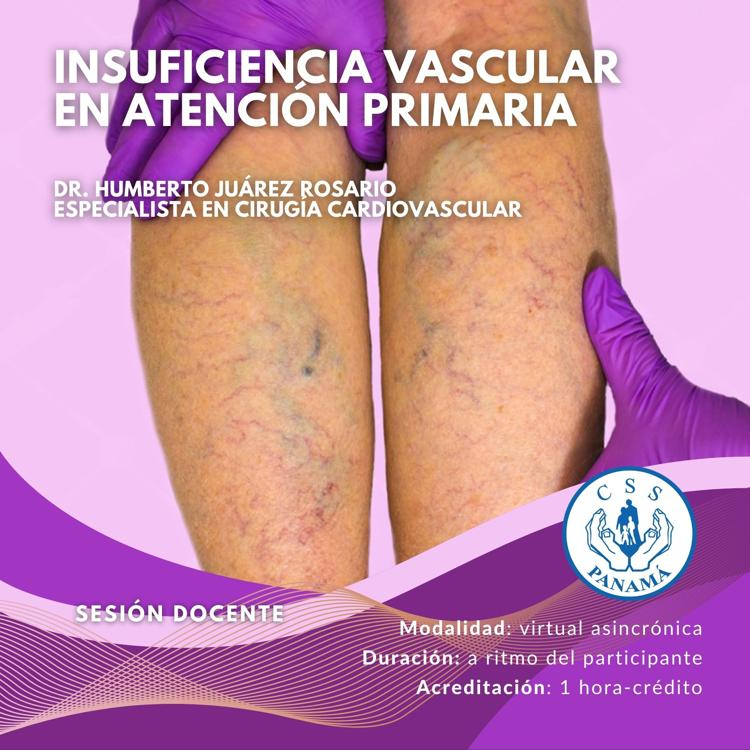

Mockup en mockups/. Cálculo efímero en el navegador, no se guarda nada. Marque todos los criterios presentes.
Puntaje total
0 puntos · 0 criterios
Nivel: —
Modelo de dos niveles: —
Probabilidad (3 niveles)
Intervención sugerida
Marque los criterios para orientar la conducta.
Ver protocolo institucional (ejemplo)/tablero/protocolos/<codigo>

Insuficiencia vascular en atención primaria
Profundice en prevención y manejo del riesgo trombótico en el primer nivel de atención.
Virtual asincrónica · 20 horas · DENADOI
Referencia y descargo
Escala de Wells para TVP (Wells PS et al., Lancet 1997; validaciones posteriores). Muestra educativa: no reemplaza el juicio clínico ni el protocolo CSS vigente. La conducta definitiva (imagen, dímero D, anticoagulación) debe seguir el protocolo oficial.